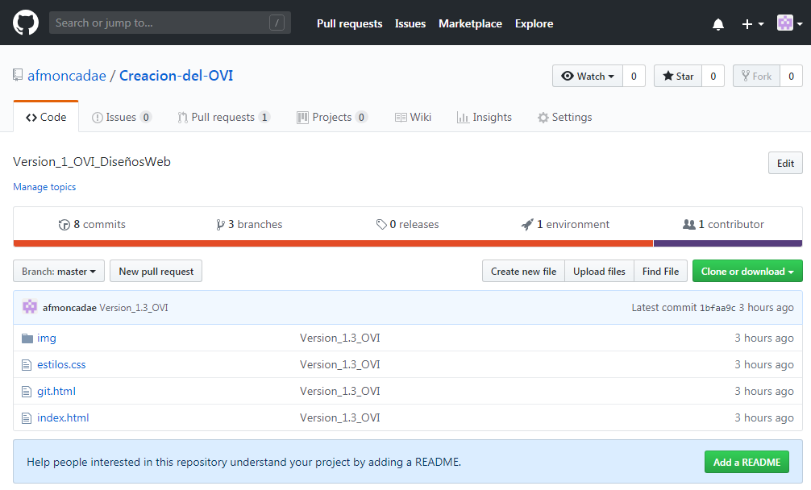

GitHub es un sitio web y un servicio en la nube que ayuda a los desarrolladores a almacenar y administrar su código, al igual que llevar un registro y control de cualquier cambio sobre este código. Para entender exactamente qué es GitHub, primero usted necesita conocer los dos principios que lo conectan: Control de versión Git
GitHub es una compañía sin fines de lucro que ofrece un servicio de hosting de repositorios almacenados en la nube. Esencialmente, hace que sea más fácil para individuos y equipos usar Git como la versión de control y colaboración.
La interfaz de GitHub es bastante fácil de usar para el desarrollador novato que quiera aprovechar las ventajas del Git. Sin GitHub, usar un Git generalmente requiere de un poco más de conocimientos de tecnología y uso de una línea de comando.
 GitHub es tan fácil de usar, que incluso algunas personas usan GitHub para administrar otro tipo de proyectos – como escribir libros.
Además de esto, cualquier persona puede inscribirse y ser hospedar un repositorio de código público completamente gratuito, el cual hace que GitHub sea especialmente popular con proyectos de fuente abierta.
Como compañía, GitHub hace dinero vendiendo alojamiento para repositorios de código privado, al igual que otros planes enfocados para negocios, que hace más fácil que las organizaciones administren a los miembros de su equipo y su seguridad. Utilizamos GitHub de forma extensiva aquí en Kinsta, para administrar y desarrollar proyectos internos.
Para tener un entendimiento básico de como luce la interfaz de GitHub, aquí hay un código fuente del sitio del OVI:
GitHub es tan fácil de usar, que incluso algunas personas usan GitHub para administrar otro tipo de proyectos – como escribir libros.
Además de esto, cualquier persona puede inscribirse y ser hospedar un repositorio de código público completamente gratuito, el cual hace que GitHub sea especialmente popular con proyectos de fuente abierta.
Como compañía, GitHub hace dinero vendiendo alojamiento para repositorios de código privado, al igual que otros planes enfocados para negocios, que hace más fácil que las organizaciones administren a los miembros de su equipo y su seguridad. Utilizamos GitHub de forma extensiva aquí en Kinsta, para administrar y desarrollar proyectos internos.
Para tener un entendimiento básico de como luce la interfaz de GitHub, aquí hay un código fuente del sitio del OVI:
